Released on April 8, 2009
(Next Release on April 15, 2009)
Another Sign of Spring: Refinery Outages
As winter ends, we all see various signs of spring, including the first crocuses blooming, robins returning, and in Washington, D.C., the breathtaking emergence of the cherry blossoms. But there is a less visible rite of spring of which most people are unaware – the peak refinery maintenance season. As winter heating oil demand winds down and before summer driving demand picks up, refiners undertake their heaviest maintenance season (less extensive maintenance occurs in the fall). By April, refiners are typically coming out of maintenance and are ramping up production of gasoline for the summer driving season. However, the industry isn’t usually at full production until sometime in May or June. Frequently, the balance between supply and demand tightens during this spring transition when refinery outages restrain supply increases at the same time seasonal demand is rising.
But this year has a new wrinkle: the U.S. has less need for petroleum products from our domestic refineries than usual. Falling petroleum consumption, high gasoline import availability, and increasing use of ethanol in gasoline have reduced demand for U.S. refinery output, and, as a result, refinery utilization has fallen, as shown in Figure 1.
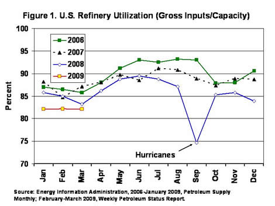
Consider just gasoline and distillate, which together represent over 70 percent of refinery output from crude oil. Energy Information Administration weekly data indicate that for the first quarter, demand for these two products fell more than 3 percent in total, (with gasoline declining 1.5 percent and distillate demand falling 6.7 percent). Distillate demand, which is mainly driven by heavy-duty trucking, has been hit hard by the slowing economy. The need for gasoline from domestic refineries is slowing even more than consumption, due, in part, to increased supply from gasoline imports, much of which comes from Europe. European refineries produce more gasoline than they can use, and their surplus gasoline volume has been growing as the region encourages consumers to switch from gasoline light duty vehicles to diesel-fueled vehicles. U.S. refinery demand is also driven lower by the increased use of ethanol, as the Energy Independence and Security Act of 2007 requires more ethanol to be used in 2009 than in 2008. Not surprisingly, the declining need for U.S. refinery output has kept downward pressure on refining margins and has led to refiners reducing crude inputs and product outputs.
With lower total product demand predicted to continue throughout 2009, refinery outages – both planned for maintenance purposes and unplanned – are not expected to have much impact on prices between now and June, even though outages will likely be higher than typical in some months. Our recent Market Assessment of Planned Refinery Outages indicates that regional movements of gasoline may, however, be needed to cover refinery outages on a local basis. The East Coast region is likely to see the tightest regional balance of gasoline supply and demand because of higher-than-usual planned and expected unplanned outages of fluid catalytic cracking (FCC) units, which primarily impact gasoline production. While weekly data indicate that extra gasoline supply from imports is arriving, somewhat higher regional price increases may be needed to continue to attract extra gasoline to the East Coast.
Weak demand, strong import availability, and low margins are also changing the way in which outages are occurring. When a major unit in a refinery, such as an FCC unit, needs to be taken offline for maintenance, the remaining refinery does not operate as efficiently as when the unit is running. In this weak market, some refiners have chosen to bring an entire refinery down while maintenance is being done, rather than continue partial operations at higher cost in a market with low margins. Examples are: Valero’s Texas City refinery that was entirely shutdown for 40 days during February and early March; Valero’s Delaware City refinery that was down during much of March and is expected to remain down through most of April; and Total’s Port Arthur refinery, which was shutdown in late March without specifying the full length of the shutdown.
Even with major refinery outages and refiners making further discretionary reductions in operating rates, U.S. gasoline and distillate inventories have grown and ended March above typical levels for this time of year (weekly gasoline and distillate stock charts). On the East Coast, which experienced very large refinery outages in March, gasoline inventories grew from 53 million barrels early in the month to over 56 million barrels by April 3. In all, the refinery maintenance program this spring is likely going to have little impact on the supply-demand balance, and seems to be providing opportunities for refiners to do extra maintenance. As a result, outages are not expected to have a major impact on product prices. While we may experience some increase in gasoline and diesel prices this spring and summer, those price changes will mainly be dependent on crude prices.
Gasoline Price Trickles Lower
The national average price for regular gasoline fell for the first time in three weeks. However, the magnitude of the drop was slight, just nine-tenths of a cent, taking the price to 203.7 cents per gallon. This was 129.5 cents below the price a year ago. On a regional level, price changes were mixed, moving up in the Rocky Mountain and West Coast regions while dipping elsewhere. On the East Coast, the price slipped just three-tenths of a cent to 202.2 cents per gallon. The average price in the Midwest dropped the most of any region, falling 4.4 cents to 198.7 cents per gallon. The average price on the Gulf Coast dropped 1.3 cents to 195.6 cents per gallon, making it the lowest among the regions. In the Rocky Mountains, the price rose 2.7 cents to 196.4 cents per gallon. The price on the West Coast also increased, rising 4.2 cents to 224.9 cents per gallon. In California, the price jumped 6 cents to 230.8 cents per gallon.
The national average price of diesel fuel increased marginally, moving up seven-tenths of a cent to 222.8 cents per gallon, 172.7 cents below the price a year ago. With the exception of the East Coast, prices rose throughout the country. On the East Coast, the price dipped two-tenths of a cent to 227.9 cents per gallon. In the Midwest, the price rose 0.2 cent, to 217.8 cents per gallon. The average price in the Gulf Coast inched up 0.7 cent to 221.0 cents per gallon. The price in the Rocky Mountains shot up 6.7 cents to 221.3 cents per gallon. The price on the West Coast grew 2.9 cents to 231.1 cents per gallon, with California increasing 3.8 cents to 233.5 cents per gallon.
Propane Inventories Post March Gain
Primary stockholders of propane reported a relatively rare March gain totaling 1.4 million barrels, the first for this month since 2004. Moreover, since last week marked the end of the 2008-09 heating season, the winter draw on inventories totaled slightly above 19 million barrels, the lowest for a winter heating season in 17 years. Last week, propane stockholders contributed to the March gain with a build of 1.3 million barrels, pushing inventories up to an estimated 39.7 million barrels as of April 3, 2009. Midwest and Gulf Coast inventories moved higher by 0.5 million barrels and 1.0 million barrels, respectively, while at the same time, inventories in the East Coast moved lower by about 0.1 million barrels. The combined Rocky Mountain/West Coast region lost 0.1 million barrels last week. Propylene non-fuel use inventories remained unchanged last week but slipped to 7.1 percent of total propane/propylene inventories from the prior week’s 7.4 percent share.
Text from the previous editions of “This Week In Petroleum” is now accessible through a link at the top right-hand corner of this page.
| Retail Prices (Cents Per Gallon) | |||||||
| 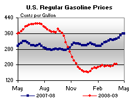 | 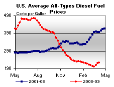 | ||||||
| Retail Data | Changes From | Retail Data | Changes From | ||||
| 04/06/09 | Week | Year | 04/06/09 | Week | Year | ||
| Gasoline | 203.7 | Diesel Fuel | 222.8 | ||||
| Spot Prices (Cents Per Gallon*) | |||||||||||||||||||||||||||||||||||
| 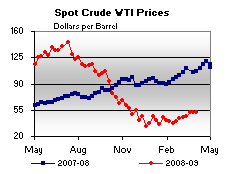 | 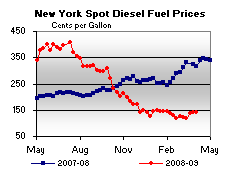 | ||||||||||||||||||||||||||||||||||
| 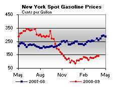 | 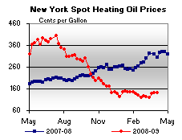 | ||||||||||||||||||||||||||||||||||
|
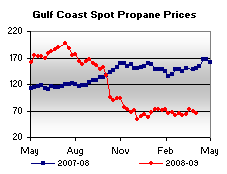 | ||||||||||||||||||||||||||||||||||
| *Note: Crude Oil WTI Price in Dollars per Barrel. | |||||||||||||||||||||||||||||||||||
| Stocks (Million Barrels) | |||||||
| 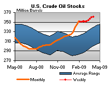 | 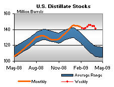 | ||||||
| 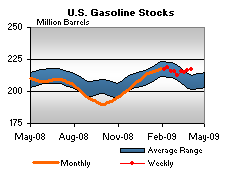 | 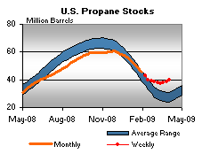 | ||||||
| Stocks Data | Changes From | Stocks Data | Changes From | ||||
| 04/03/09 | Week | Year | 04/03/09 | Week | Year | ||
| Crude Oil | 361.1 | Distillate | 140.8 | ||||
| Gasoline | 217.4 | Propane | 39.736 | ||||